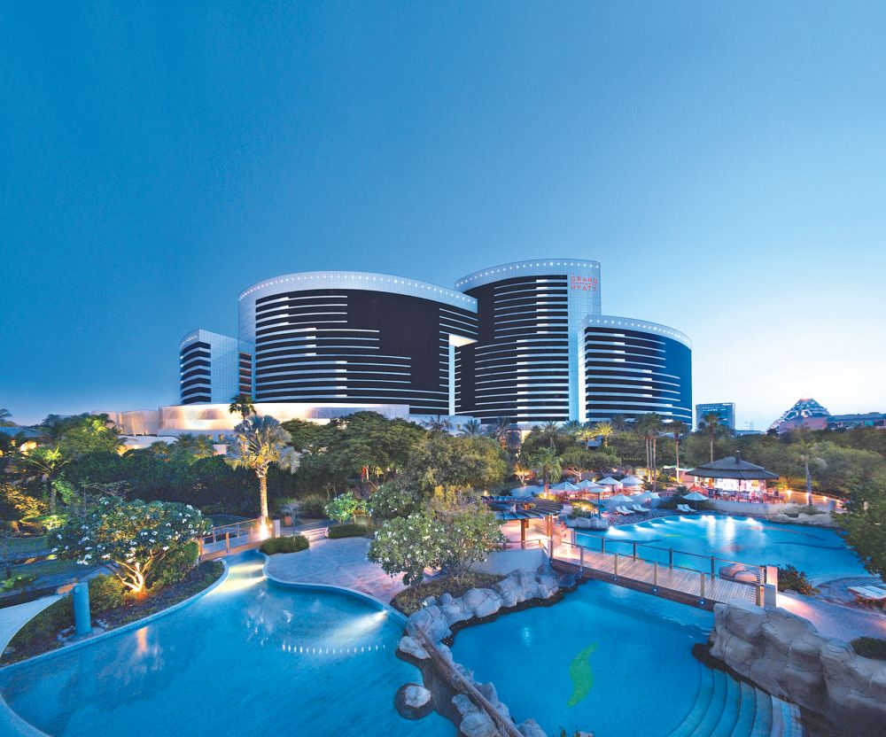
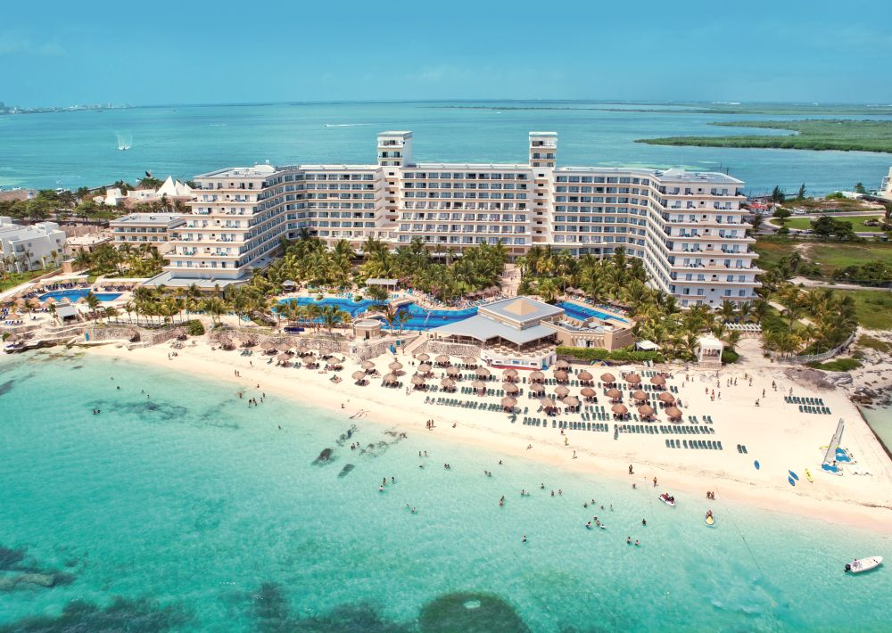

Grand Hyatt Dubai

© TUI.be
Wanneer je Grand Hyatt Dubai zegt, zeg je ook talrijke, lekkere restaurants en luxueus uitgeruste kamers.
Ga langs in één van de vele restaurants en geniet van de tongstrelende gerechten die de chef voor je klaarmaakt.
Shoppingliefhebbers opgelet, Grand Hyatt Dubai is het ideale hotel om te 'shoppen 'till you drop'! Om jou het ultieme shoppingplezier te laten beleven zijn er een aantal exclusieve boetieks in het resort zelf.
Het resort is ook ideaal gelegen om Dubai en al zijn 'glitter & glamour' van dichterbij te bezien.
Geen nood, dankzij de ruime tuin kan je toch nog in alle rust genieten ondanks dat het bruisende centrum van Dubai slechts op een steenworp afstand ligt.
Dit hotel biedt service van wereldklasse. Aan jou om het te ontdekken.
more info
Riu Caribe

© TUI.be
Het imposante, maar sfeervolle Riu Caribe is gelegen in de hotelzone van Cancún, vlak aan een mooi zandstrand.
Enkele verdiepingen lager is het animatieteam het beste van zichzelf aan het geven.
Rep je dus snel in die strandkleren en geniet van een hele dag vertier.
Dankzij de uitgebreide All In formule hoef je nooit op je honger te blijven.
Bovendien krijg je toegang tot de faciliteiten in zusterhotel Riu Cancun.
Riu Caribe richt zich eerder op volwassenen.
more info
Hotel Romance Istanbul
 © TUI.be
© TUI.be
Hotel Romance is een uitstekend en charmant viersterrenhotel met een unieke ligging in het historische centrum van Istanbul.
Als je de kamer binnenkomt word je ontvangen door de traditionele Ottomaanse elegantie.
Het personeel is bijzonder gastvrij en geeft je persoonlijke tips om je stedentrip tot een succes te maken.
Na een lange dag de levendige stad van Istanbul bezocht te hebben, kan je heerlijk ontspannen in de spa.
more info